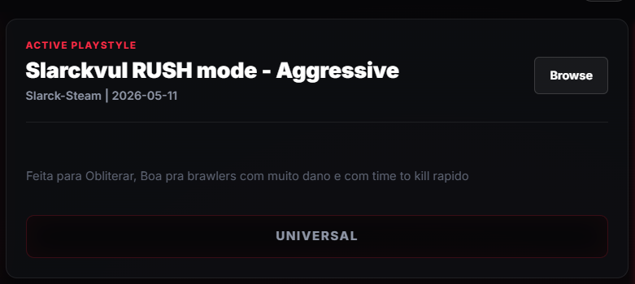

01ПОДГОТОВКА
Эмулятор и нужный аккаунт
Скачай и установи LDPlayer на компьютер. Внутри эмулятора установи Brawl Stars и войди в аккаунт, на котором будешь выполнять сбив.
Открыть сайт LDPlayer ↗Пошаговый гайд по установке и настройке программы.
От первого запуска до подготовки к пушу 3-го прайма.
Начинай с персонажем на 0–1000 трофеев. Если у него больше 1000, но меньше 2000, сначала вручную слей трофеи до 1000 и только после этого запускай сбив.
Если у бойца уже 2000 трофеев или больше, уточни дальнейшие действия у Behelit69.
Скачай и установи LDPlayer на компьютер. Внутри эмулятора установи Brawl Stars и войди в аккаунт, на котором будешь выполнять сбив.
Открыть сайт LDPlayer ↗Открой страницу загрузки в браузере компьютера и скачай программу. Программа запускается на самом ПК — не внутри LDPlayer.
Перейти к скачиванию ↗В программе найди выбор стиля игры и установи режим, показанный на скриншоте: Slarckyul RUSH mode – Aggressive.

Открой вкладку «Бойцы» и выбери нужного бравлера. Заполни параметры его текущими значениями.
Вернись в Brawl Stars. Выбери режим «Бравлбол» и того же персонажа, которого указал в программе. Затем нажми «Старт» в программе.
Оставь программу работать и дождись достижения цели. По инструкции продавца процесс занимает примерно 14–36 часов без твоего участия; фактическое время может отличаться.
Когда у бойца будет 2000 трофеев, останови программу. После этого можно переходить к апу 3-го прайма.
Останови программу → продолжай играть самостоятельно.